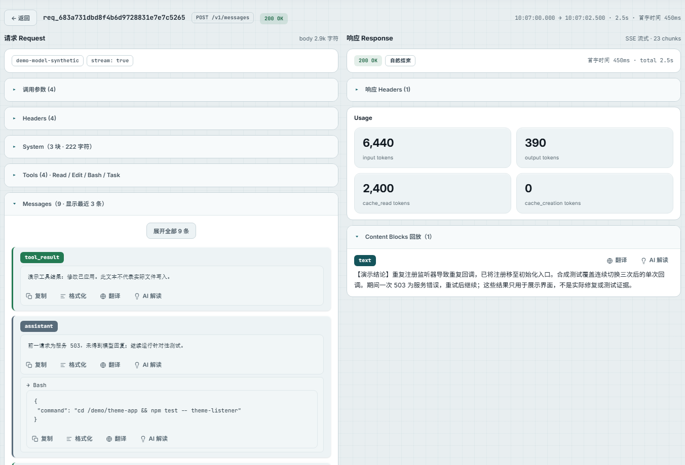
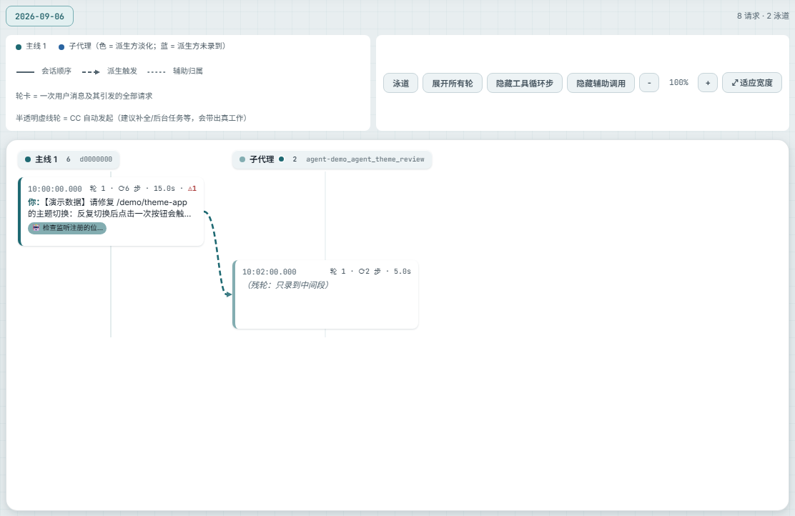
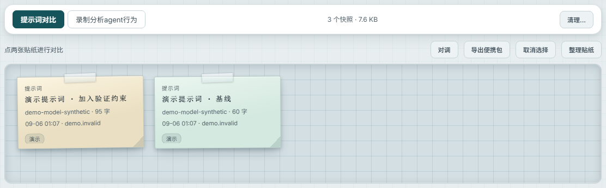
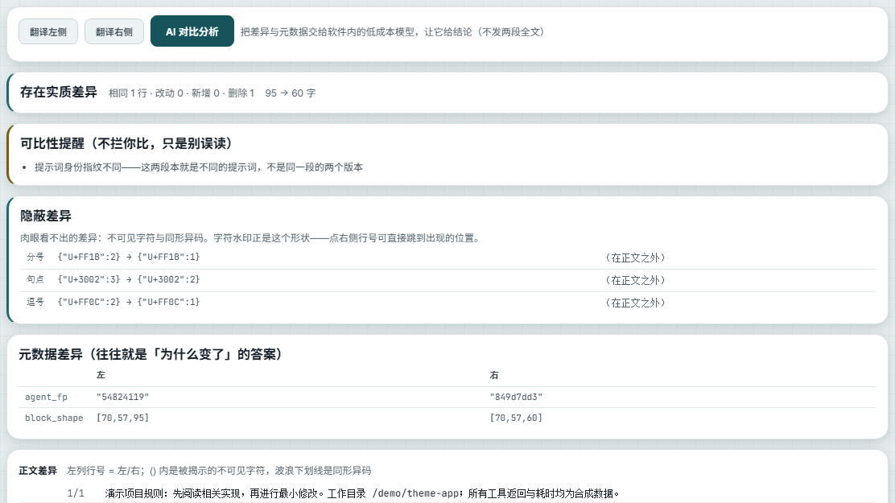

{kind=link}
{kind=link}
{kind=link}
{kind=link}
在软件内分析
配置模型端点后，可翻译和解读文本、讨论快照，或生成轨迹语义摘要。
- 先选定材料，再发起对应分析。
- 解释与原始内容分别保留。
- 输入范围、模型能力和记录完整性都会影响结论。
把终端里的对话，展开成一次真实的模型请求。
除了用户输入，还能检查系统提示词、历史消息、工具定义和调用参数。遇到回答变化或指令冲突时，先确认输入里实际包含了什么。
只能查看上游实际返回并被录制的 thinking，不等于读取模型全部内部思考。

以下为实际软件界面，使用隔离的合成示例数据。
主线、子代理和辅助请求，放回同一段过程里看。
标题生成、安全审查、上下文压缩和重试会混在运行中。时序图按会话与泳道组织这些请求，让等待、派发和反复调用更容易被发现。
部分关系由匹配规则推断，图上的相邻或连线需要结合请求核实。

以下为实际软件界面，使用隔离的合成示例数据。
把值得保留的提示词或录制保存成快照，给后续分析留下可反复打开的材料。


从请求详情备份提示词或录制，在分析工作区组织材料，保留调查时使用的上下文。
比较提示词与上下文的变化，也检查换行、零宽字符和同形字符等容易漏看的差异；需要时继续用模型讨论。
差异说明内容变了，不自动证明它导致了结果变化。提示词白板双选比较与录制分析是不同操作。 以下为实际软件界面，使用隔离的合成示例数据。
了解快照与比较轨迹分析把多次请求整理成节点和阶段，从产物、检查、反复与开销几个角度观察同一段运行。
轨迹的阅读方式示意
哪些输入可能支撑了产物
写入之后有哪些读取与检查迹象
错误、阻断和重试出现在何处
结合时间与 Token 看执行开销
现有八视图包括状态快照、物料血统、验证矩阵、阀门与回路、能耗与方差、物料生命线，以及反事实表和时序图。
先看整体变化，再进入节点，最后回到请求与工具结果。图形帮助提出和核对问题，不能替代证据本身。
阅读轨迹分析方法阶段摘要来自模型归纳；关系和检查等级包含程序推断。“最优轨迹”是规则下的事后候选，不是经过证明的最佳方案。
图形界面与本地 HTTP API 使用同一套录制。问题跨越很多请求时，可以让 Agent 检索、统计，再按记录 ID 回查。
配置模型端点后，可翻译和解读文本、讨论快照，或生成轨迹语义摘要。
运行服务后，先让 Agent 读取内置使用指南，按接口发现可用数据，再逐步查询。
先读取 CC Wire Analyzer 的 /api/ai-guide。检查今天的失败和慢请求，列出对应记录 ID，再核对相关调用参数。无法确定的原因请说明缺少什么证据。
GET http://127.0.0.1:<端口>/api/ai-guide
端口以当前实例为准。这是给外部 Agent 的使用示例，不代表软件已经提供持续自主调查与行动闭环。
查看 Agent 使用方式请求经过本机代理继续发往已配置的上游，记录保存在本机。翻译、AI 解读和语义分析会把相应材料发往你配置的分析端点；更新检查与下载也会联网。
鉴权头会脱敏，但正文仍可能含用户消息、文件片段和秘密。分享前需要检查具体内容；官网截图使用专门准备的合成示例。
当前产品面向 Claude Code，提供 Windows 和 macOS 应用与中英日界面。其他 harness 的适配仍需按实际协议与行为核对，不能把研究方向当作已经支持。
错误聚合、图形、模型解释和反事实候选都用于辅助调查。能否形成结论取决于证据和分析；产品说明书把已有能力与后续设计分开标明。